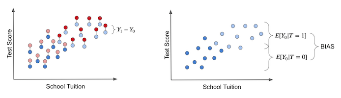
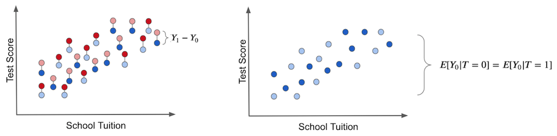

01 - Introduction To Causality#
우리가 왜 인과추론에 대해 관심을 가져야 할까요?#
무엇보다도, 인과추론이 여러분들에게 어떤 도움이 될지에 대해 궁금해 하실거에요. 바로 이 책에서 답을 찾아보시죠!
데이터 과학은 예전과 같지 않아요#
데이터 과학자는 Harvard Business Review에 따르면, 21세기 가장 매력적인 직업으로 선정되었어요. 10년 동안 데이터 과학자는 세간의 주목을 받아왔는데요, AI 전문가들은 스포츠 스타와 맞먹는 수준의 급여를 받았습니다. 명성과 부를 찾기 위해, 수많은 젊은 전문가들이 “데이터 과학” 타이틀을 최대한 빨리 얻기 위한 골드러시(Gold Rush)에 열광적으로 뛰어들었고, 이러한 데이터 과학 열풍(Hype)으로 새로운 산업들이 생겨났습니다. 하나의 수학 공식을 따로 볼 필요 없이, 다양하고 놀라운 방법(Teaching method)을 통해, 여러분을 데이터 과학자로 만들어 줄 수도 있어요. 컨설팅 전문가들은 회사가 가진 데이터의 잠재력을 깨울 수 있다면, 수백만 달러를 약속하기도 할 정도로 수요가 높아지고 있습니다. 이러한 영향으로, AI/ML은 새로운 자원으로 불려오고 있어요.
데이터 과학의 열풍 동안, 경제학자들은 교육이 소득에 미치는 실질적 영항이 무엇인지 답하려고 했으며, 생물통계학자들은 포화 지방이 심장마비의 위험을 더 높이는지에 대해 이해하려고 했고, 심리학자들은 응원의 말이 (words of affirmation) 실제로 더 행복한 결혼생활로 이어진다는 것을 이해하고자 노력했습니다. 솔직히 말하자면, 데이터 과학은 최근에 생긴 분야가 아니에요. 단지 미디어가 제공한 데이터 과학에 대한 엄청난 무료 마케팅의 영향으로 인한 것일 뿐입니다.
Jim Collins(미국의 컨설턴트)의 비유를 사용해, 이 책을 보고 있는 여러분의 최애 맥주를 차가운 컵에 따르는 상황에 대해 생각해봅시다. 만약 여러분이 맥주를 잘 따른다면, 컵에는 맥주로 채워지지만 손가락 1개 정도의 거품이 위에 생길거에요. 이 맥주를 따른 컵은 마치 데이터 과학과 같습니다. 그 이유는요,
맥주 (Beer) : 통계적 기초, 과학적 호기심, 복잡한 문제에 대한 열정 - 앞의 모든 가치들은 수백년동안 매우 가치있다고 증명되었어요.
거품 (Foam) : 결국에 사라질 이 거품은 비현실적인 기대를 기반으로 만들어졌어요.
그리고, 거품은 여러분이 생각하신 것보다 더 빨리 무너질 수 있습니다. 이코노미스트(The Economist)가 언급한 것 처럼 말이죠.
AI가 세상을 바꾸는 영향을 줄 것이라고 예측하는 컨설턴트들은 실제 회사의 관리자들이 AI를 적용하기가 쉽지 않다는 것과 이에 대한 열정이 식어가고 있다고 이야기합니다. Gartner의 Svetlana Sicular는 2020년이 AI가 회사의 잘 알려진 “유행 사이클 (Hype Cycle)”의 내리막에 떨어지는 해가 될 수 있다고 말합니다. 투자자들은 AI 유행에 휩쓸리는 것 (Bandwagon-jumping)에 대해 점점 깨닫기 시작했습니다. 벤처캐피털 펀드인 MMC가 유럽 AI 스타트업들을 대상으로 한 설문조사에 따르면, 40%가 AI를 전혀 사용하지 않는 것으로 나타났습니다.
독자 여러분들이 현명하시다면, 시작으로 맥주의 거품(Foam)을 무시하는 법을 배우게 될 거에요. 수학과 통계학은 앞으로도 영원히 유용할 것이며, 해당 학문이 지금 당장 멈추지 않을 겁니다.
어느 누구도 어떻게 사용해야 하는지 모르는 번지르르한 최신 도구가 아닌, 여러분의 일을 가치 있게 만드는 것이 무엇인지 배우세요.
마지막으로, 데이터 과학을 배움에 있어 지름길은 없다는 것을 기억하세요. 수학 및 통계학 지식은 습득하기 어렵기 때문에 정말 가치가 있습니다. 모든 사람이 할 수 있다면 초과 공급으로, 가격이 낮아질 거에요. 그러므로, 의지를 강하게 가지세요! 그리고 해당 지식을 가능한 한 잘 배우세요. **용감하고 진실된 사람들 (For the Brave and True)**만을 위한 이 여정을 시작하는 동안 즐거운 시간 보내시길 바랍니다!
다른 유형의 질문에 답하기#
머신러닝(Machine Learning)은 현재 예측 유형 (Prediction kind)의 질문에 능숙한 분야입니다. Ajay Agrawal, Joshua Gans, Avi Goldfarb는 Prediction Machines이라는 책에서 “AI의 새로운 물결은 실제로 우리에게 지능을 가져다주는 것이 아닌, 지능의 주요 구성 요소인 예측을 가져다줍니다”라고 이야기 했습니다. 머신러닝으로 우리는 모든 종류의 아름다운 태스크를 해낼 수 있어요. 단지 필요한 사항은 태스크를 예측 문제로 프레임화하는 것입니다. 예를 들어, 여러분이 영어에서 포르투갈어로 번역하고 싶으신가요? 그러면, 영어 문장이 주어졌을 때, 포르투갈어 문장을 예측하는 ML 모델을 구축하시면 됩니다. 만약, 얼굴을 인식하고 싶으신가요? 그러면, 사진의 세부부분에서 얼굴의 존재에 대해 예측하는 ML 모델을 만들면 됩니다. 여러분이 자율주행차를 만들고 싶으세요? 그럼 다음과 같은 ML 모델을 만들어 자동차 주변의 이미지와 센서 정보가 제공될 때, 바퀴의 방향과 브레이크 & 액셀러레이터의 압력을 예측하면 됩니다.
그러나, 머신러닝은 만병 통치약이 아닙니다. 머신러닝은 엄격한 바운더리에서 엄청한 일을 해낼 수 있지만, 해당 데이터가 모델에 적합된 것과 조금 다를 경우 제대로 작동하지 않을 수 있어요. Prediction Machines 책의 또 다른 예를 들자면, “많은 산업에서, 낮은 가격은 낮은 판매와 관련이 있다고 합니다. 예를 들어, 호텔 산업에서 가격은 비수기 일 때 저렴하고, 수요가 가장 많고 호텔이 가득차는 성수기 시즌에는 가격이 높습니다. 해당 데이터가 주어졌을 때, 머신러닝의 순진한 예측(Naive predicition)에서는 가격을 인상하면, 더 많은 객실이 팔릴 것이라고 제안할 수 있습니다. (인과관계)”
머신러닝은 위 사례와 같이 인과관계 유형의 문제를 잘 다루지 못합니다. 인과추론의 문제는 경제학자들이 반사실(Counterfactuals)이라고 부르는 “만약에” 질문에 답할 것을 요구해요. 현재 상품에 대해 요청한 가격 대신 다른 가격을 사용하면 어떻게 될까요? 저지방 식단 대신, 저당 식단을 따르게 된다면 어떻게 될까요? 만약 여러분이 은행에서 일하면서 신용을 제공하는 경우, 고객 라인을 변경하게 된다면 수익이 어떻게 바뀌는지 파악해야 합니다. 또는 지자체에서 일하고 있다면, 학교 시스템을 개선하는 방법에 대해 파악하라는 요청을 받을 수 있어요. 이러한 상황이 생겼을 때, 여러분은 디지털 지식의 시대가 알려주는 대로 모든 학생들에게 태블릿을 줘야 할까요? 아니면 기존 방식의 도서관을 지어야 할까요?
해당 질문의 중심에는 우리가 답을 알고자 하는 인과적 질문이 있습니다. 인과적인 질문은 매출을 높이는 방법을 찾는 것과 같이 일상적인 문제에 스며들어 있어요. 또한 우리에게 매우 개인적이고 소중한 딜레마에서 필수적인 역할을 합니다. 예를 들자면, 여러분은 인생에서 성공하기 위해 돈이 많이 드는 학교에 가야 할까요 (교육으로 인해 소득이 증가하나요)? 이민이 취업 기회를 낮추나요 (이민으로 인해 실업이 증가합니까)? 가난한 사람들에게 송금하면 범죄율이 낮아지나요? 위와 같은 문제들을 다룰 때, 여러분이 소속되어 있는 분야는 중요하지 않습니다. 여러분이 이러한 유형의 인과관계 질문에 답을 한적이 있거나 앞으로 대답해야 할 가능성이 매우 높아요. 안타깝게도, ML은 상관관계 유형 예측에 의존하여 인과추론의 문제를 해결할 수 없습니다.
이러한 인과관계 질문에 대답하는 것은 대부분의 사람들이 인식하는 것보다 훨씬 어렵습니다. 여러분은 주변 사람들로 부터 “연관은 인과관계가 아니다” 라고 여러번 들어보셨을 겁니다. 그러나 실제로 왜 연관성이 인과관계가 아닌지 설명하는 것은 조금 더 복잡해요. 이것이 인과추론에 대한 소개의 전부입니다. 이 책의 나머지 부분은 연관성을 인과관계로 만드는 방법을 알아내는 데 포커스를 둘 예정입니다.
연관성이(Association) 인과관계(Causation)가 될 때#
직관적으로 볼 때, 여러분들은 연관성(Association)이 인과관계(Causation)가 아닌 이유를 알고 있습니다. 누군가가 학생들에게 태블릿 PC를 제공하는 학교가 그렇지 않은 학교보다 더 나은 성과를 보인다고 말한다면, 태블릿을 제공하는 학교가 더 부유하다는 사실을 빠르게 찾아낼 수 있을 거에요. 따라서, 해당 학생들은 태블릿 없이도 평균보다 더 잘 할 수 있을 겁니다. 이로 인해, 수업 시간에 아이들에게 태블릿을 제공하는 것이 학업 성취도를 높일 것이라고 결론지을 수는 없습니다. 단지, 여기서는 학교의 태블릿이 높은 학업 성과와 관련이 있다고 말할 수 있을 뿐입니다.
Show code cell source
import pandas as pd
import numpy as np
from scipy.special import expit
import seaborn as sns
from matplotlib import pyplot as plt
from matplotlib import style
style.use("fivethirtyeight")
np.random.seed(123)
n = 100
tuition = np.random.normal(1000, 300, n).round()
tablet = np.random.binomial(1, expit((tuition - tuition.mean()) / tuition.std())).astype(bool)
enem_score = np.random.normal(200 - 50 * tablet + 0.7 * tuition, 200)
enem_score = (enem_score - enem_score.min()) / enem_score.max()
enem_score *= 1000
data = pd.DataFrame(dict(enem_score=enem_score, Tuition=tuition, Tablet=tablet))
Show code cell source
plt.figure(figsize=(6,8))
sns.boxplot(y="enem_score", x="Tablet", data = data).set_title('ENEM score by Tuition Cost')
plt.show()
단순한 직관 넘어, 먼저 Notation을 설정해 보겠습니다. 해당 Notation은 인과관계에 대해 말하는 공통언어가 될 것이며, 앞으로 배울 내용에 있어서 중요한 부분을 차지합니다.
\(T_i\)는 unit i (실험대상 i)에 대한 Treatment (처치) 여부를 나타냅니다.
\( T_i=\begin{cases} 1 \ \text{: 실험대상 i가 Treatment를 받은 경우}\\ 0 \ \text{: 실험대상 i가 Treatment를 받지 않은 경우}\\ \end{cases} \)
여기서의 처치(Treatment)는 약 또는 의료분야에 관련된 것일 필요는 없습니다. 대신, 효과(effect)를 알고자 하는 일부 개입(intervention)을 나타내는데 사용할 용어일 뿐입니다. 위에서 살펴본 사례의 경우, 처치(Treatment)는 학생들에게 태블릿을 제공하는 것에 해당해요. Treatment를 나타내기 위해, \(T\) 대신 \(D\)가 표시되는 경우가 있으니 참고 부탁드려요.
이제, unit i에 대해 관찰된 결과 변수(Outcome variable)를 \(Y_i\)라고 정의합니다.
결과(Outcome)은 우리가 관심이 있는 변수입니다. 우리는 인과추론에서 Treatment (처치)가 Outcome(결과)에 영향을 미치는지 알고 싶을 거에요. 위 사례에서는 학업 성취가 결과 변수가 됩니다.
이 부분에서 흥미로워 지는데요. **인과적 추론의 근본적인 문제 (Fundamental problem of causal inference)**는 Treatment가 있든 없든 같은 실험 대상에 대해 동시에 관찰할 수 없다는 것입니다. 마치 우리에게 두 갈래 길이 있고, 우리가 가는 길 앞에 무엇이 놓여 있는지 알 수 있는 것과 같아요. Robert Frost 시에서 처럼요 (시의 경우 번역없이 원문 그대로 적었습니다):
단풍 든 숲 속에 두 갈래 길이 있었습니다. 몸이 하나니 두 길을 가지 못하는 것을 안타까워하며 한참을 서서 낮은 수풀로 꺾여 내려가는 한쪽 길을 멀리 끝까지 바라다 보았습니다. <고수들의 계량경제학 번역 참조>;
이 문제를 해결하기 위해 **잠재적 결과 (Potential Outcomes)**에 대해 많은 이야기를 해볼 예정입니다. Potential outcomes은 실제로 일어나지 않았으나 발생할 수 있는 결과입니다. 대신 Treatment를 받은 경우, **무슨 일이 일어났을지 (what would have happened)**를 나타냅니다. 우리는 때로는 일어난 잠재적 결과를 사실(factual)이라고 부르고, 일어나지 않은 결과를 반사실(counterfactual)이라고 부릅니다.
Notation 관련해서는 추가 첨자(subscript)를 사용합니다.
\(Y_{0i}\) : 실험대상 i가 Treatment를 받지 않은 잠재적 결과를 의미합니다.
\(Y_{1i}\) : 같은 실험대상 i가 Treatment를 받은 잠재적 결과를 의미합니다.
때로는 여러분들이 잠재적 결과를 함수 \(Y_i(t)\)로 보실 수 있는데요, 이 부분을 주의해주세요. \(Y_{0i}\)가 \(Y_i(0)\)로 표기될 수 있고 \(Y_{1i}\)는 \(Y_i(1)\)일 수 있습니다. 혼란를 방지하기 위해, 이 책에서는 대부분 추가 첨자를 활용한 notation으로 표기할 예정입니다.
다시 우리가 위에서 다룬 예제로 돌아와서, \(Y_{1i}\)는 태블릿이 있는 교실에 있는 경우 학생 i에 대한 학업 성취도를 나타냅니다. 만약 학생 i가 태블릿을 받았다면, \(Y_{1i}\)를 관찰할 수 있어요. 만약 태블릿을 받지 못한 경우는 \(Y_{0i}\)를 관찰 할 수 있겠죠? 태블릿을 받지 못한 경우, \(Y_{1i}\)가 여전히 정의되어 있지만 우리가 관측할 수 없어요. 이 경우 반사실적 잠재적 결과(counterfactual potential outcome)입니다.
potential outcomes을 통해, 개별 처치 효과(ITE, Individual Treatment, Effect)를 정의할 수 있게 됩니다 :
\(Y_{1i} - Y_{0i}\)
물론, 인과추론의 근본적인 문제로 인해 잠재적 결과 중 하나만 관찰할 수 있습니다. 그렇기 때문에 ITE를 알 수 없습니다. 그래서 당분간은 ITE를 추정하는 것 대신, 추정하기 더 쉬운 **평균 처치 효과 (ATE, Average Treatment Effect)**에 대해 알아보도록 해요
\(ATE = E[Y_1 - Y_0]\)
E[...] 는 기댓값을 나타냅니다. 조금 더 추정하기 쉬운 값은 처치받은 그룹에 대한 평균 처치 효과(ATET/ATT, average treatment effect on the treated) 입니다:
\(ATT = E[Y_1 - Y_0 | T=1]\)
위의 사례에서 본 것 처럼, 두 가지 잠재적 결과를 모두 볼 수 없다는 것을 확인했습니다. 하지만 논쟁의 목적으로, counterfactual도 볼 수 있다고 가정해 볼게요. 인과적 추론의 신(Causal inference deity)이 있다고 생각하고, 해당 신이 우리가 싸운 많은 통계적인 전투에 만족해 잠재적 대안의 결과를 볼 수 있는 신과 같은 능력을 보상했다고 가정해 보겠습니다. 해당 능력으로 4개의 학교에 대한 데이터를 수집한다면, 학생들에게 태블릿 제공 여부와 연간 학업 시험 점수를 알게 됩니다. 여기에서 태블릿은 Treatment, 학생들에게 태블릿을 제공하는 경우 \(T=1\)이고, \(Y\)는 학업 성취에 대한 시험 점수가 됩니다.
Show code cell source
pd.DataFrame(dict(
i= [1,2,3,4],
y0=[500,600,800,700],
y1=[450,600,600,750],
t= [0,0,1,1],
y= [500,600,600,750],
te=[-50,0,-200,50],
))
| i | y0 | y1 | t | y | te | |
|---|---|---|---|---|---|---|
| 0 | 1 | 500 | 450 | 0 | 500 | -50 |
| 1 | 2 | 600 | 600 | 0 | 600 | 0 |
| 2 | 3 | 800 | 600 | 1 | 600 | -200 |
| 3 | 4 | 700 | 750 | 1 | 750 | 50 |
여기서 \(ATE\)는 마지막 컬럼에 대한 평균 즉, 개별 처치 효과(ITE)에 대한 평균입니다.
\(ATE=(-50 + 0 - 200 + 50)/4 = -50\)
ATE를 통해, 태블릿이 학생들의 학업 성취도를 평균적으로 50점 감소시켰음을 의미합니다. 여기서 \(ATT\)는 \(T=1\)일 때 마지막 열의 평균입니다.
\(ATT=(- 200 + 50)/2 = -75\)
태블릿(Treatment)을 받은 학교는, 태블릿이 학생들의 학업 성취도를 평균적으로 75점 감소시켰다는 것을 의미합니다. 물론, 우리는 해당 결과를 결코 알 수 없습니다 (counterfactuals). 실제로, 우리가 마주한 데이터는 아래와 같습니다.
Show code cell source
pd.DataFrame(dict(
i= [1,2,3,4],
y0=[500,600,np.nan,np.nan],
y1=[np.nan,np.nan,600,750],
t= [0,0,1,1],
y= [500,600,600,750],
te=[np.nan,np.nan,np.nan,np.nan],
))
| i | y0 | y1 | t | y | te | |
|---|---|---|---|---|---|---|
| 0 | 1 | 500.0 | NaN | 0 | 500 | NaN |
| 1 | 2 | 600.0 | NaN | 0 | 600 | NaN |
| 2 | 3 | NaN | 600.0 | 1 | 600 | NaN |
| 3 | 4 | NaN | 750.0 | 1 | 750 | NaN |
보다시피 위 표는 인과효과를 계산하기 위해 확실히 이상적이지 않죠? 그런데 여전히 처치된 그룹의 평균을 취하여 처치되지 그룹의 평균과 비교할 수 없을까요? 즉, \(ATE=(600+750)/2 - (500 + 600)/2 = 125\) 하면 안되나요? 안됩니다! 결과가 얼마나 다른지 주목해보세요! 만약 이렇게 생각하셨다면, 여러분은 연관성을 인과관계로 착각하는 가장 중대한 죄(?)를 저지르신겁니다. 이유를 이해하기 위해 인과추론의 주요 적인 Bias (편향)에 대해 살펴보겠습니다.
Bias (편향)#
Bias는 연관성을 인과관계와 다르게 만듭니다. 다행히도 bias는 우리의 직관으로 쉽게 이해할 수 있어요. 위 태블릿 사례를 다시 짚어보도록 하겠습니다. 학생들에게 태블릿을 제공하는 학교가 더 높은 시험 점수를 얻는다는 주장에 부딛혔을 때, 여러분은 해당 학교가 태블릿 없이도 어쨌든 더 높은 시험 점수를 얻을 것이라고 말함으로써 이 주장을 반박할 수 있습니다. 왜나하면, 다른 학교보다 돈이 더 많기 때문입니다. 따라서 해당 학교는 더 나은 교사에게 비용을 지불하고 더 나은 교실을 제공할 수 있을 거에요. 즉, 처치된 그룹과 처치되지 않은 그룹과 비교 가능하지 않은 경우입니다.
Potential outcome 표기법에서 처치받은 \(Y_0\)가 처치받지 않은 \(Y_0\)는 다릅니다. 처치받은 \(Y_0\)는 반사실이라는 것을 명심해야 해요. 실제로 Counterfactuals 관찰할 수 없으나, 해당 부분에 대해 추론은 할 수 있어요. 반사실을 추론하기 위한 경우에서는, 우리는 세상이 어떻게 돌아가는지에 대한 이해 (도메인 지식 등)를 활용하여 더 합리적으로 추론할 수 있어요. 위 예시의 경우, 처치를 받은 학교의 \(Y_0\)가 처치를 받지 않은 학교의 \(Y_0\)보다 더 크다고 말할 수 있어요. 다시 말해, 학생들에게 태블릿을 제공할 수 있는 학교는 더 높은 시험 점수에 영향을 주는 다른 요인들도 존재할 수 있기 때문입니다. Potential outcomes을 충분히 이해하고 익숙해지는데 있어 시간이 조금 필요해요. 이 단락을 다시 읽어보시고 이해하셨는지 한 번 확인해주세요.
이를 염두에 두고, 연관성이 인과관계가 아닌 경우인 이유에 대해 기본적인 수식으로 보여줄 수 있습니다. 연관성은 \(E[Y|T=1] - E[Y|T=0]\)로 측정됩니다. 이는 태블릿이 있는 학교의 평균 시험 점수에서 태블릿이 없는 학교의 평균 시험 점수를 뺀 값입니다. 반면 인과관계는 \(E[Y_1 - Y_0]\)로 측정됩니다.
연관성을 측정하고 관찰된 결과를 Potential outcomes으로 대체하여 어떻게 관련되는지 살펴보겠습니다. 처치를 받은 경우 관찰된 결과는 \(Y_1\)입니다. 처치를 받지 않은 경우 관찰된 결과는 \(Y_0\)입니다.
\( E[Y|T=1] - E[Y|T=0] = E[Y_1|T=1] - E[Y_0|T=0] \)
이제, \(E[Y_0|T=1]\)를 더하고 뺍시다. 이 부분은 counterfactual outcome에 대한 부분입니다. 이는 처치를 받지 않았다면 처치의 결과가 어떠했을 것인지를 알려줍니다.
\( E[Y|T=1] - E[Y|T=0] = E[Y_1|T=1] - E[Y_0|T=0] + E[Y_0|T=1] - E[Y_0|T=1] \)
마지막으로, 수식을 재정리하고, 기댓값을 합친 이후를 보시죠!
\( E[Y|T=1] - E[Y|T=0] = \underbrace{E[Y_1 - Y_0|T=1]}_{ATT} + \underbrace{\{ E[Y_0|T=1] - E[Y_0|T=0] \}}_{BIAS} \)
이 처럼 간단한 수학의 일부는 인과관계 질문들에서 만나게 될 모든 문제를 포함하며, 이 부분을 이해하는 것은 매우 중요해요. 만약 여러분의 팔에 문신해야 한다면, 위 식은 좋은 후보(?)가 될 거에요. 100가지 다른 방식으로 해석될 수 있는 신성한 텍스트처럼, 위 식이 우리에게 말하고 있는 것을 깊이 붙잡고 이해해야 합니다. 조금 더 자세히 살펴보도록 하시죠. 몇 가지 의미로 나누어보면, 첫째, 이 식은 연관성이 인과관계가 아닌 이유를 알려줍니다. 보시는 것 처럼, 연관성은 처치에 대한 처치 효과에 bias를 더한 것과 같아요. Bias는 실험군과 대조군이 처치를 받지 않은 경우, 처치 전에 실험군과 대조군이 어떻게 다른지를 나타냅니다. 어떤 누군가가 교실에서 태블릿이 학업 성적을 향상시킨다고 말할 때, 왜 해당 부분이 의심스러운지 정확하게 말할 수 있어요. 예시에서 \(E[Y_0|T=0] < E[Y_0|T=1]\)를 보면, 태블릿 제공 여부와 무관하게 학생들에게 태블릿을 줄 수 있는 학교가 그렇지 않은 학교보다 낫다고 생각할 것입니다.
왜 이런 일이 발생하는 것일까요? 교란변수(Confounding variable)에 대해 나중에 더 이야기 할 예정이지만, 지금은 우리가 통제 할 수없는 많은 변수들이 Treatment와 함께 바뀌기 때문에 발생하는 편향을 생각할 수 있습니다. 결과적으로 처치를 받은 학교와 처치를 받지 않은 학교는 태블릿에서만 차이가 있지 않습니다. 태블릿 제공 여부 이외에도 수업료, 위치, 교사에 따라 달라질 수 있어요 … 태블릿 제공이 학업 성적 향상에 도움이 된다고 이야기하기 위해서는 태블릿이 있는 학교와 없는 학교가 평균적으로 서로 비슷해야 합니다 (비교가능).
Show code cell source
plt.figure(figsize=(10,6))
sns.scatterplot(x="Tuition", y="enem_score", hue="Tablet", data=data, s=70).set_title('ENEM score by Tuition Cost')
plt.show()
이제 주어진 문제를 이해했으므로 해결방법에 대해 살펴보도록 하겠습니다. 연관성을 인과관계와 같게 만들어주기 위해 무엇이 필요한지 이제 이야기 할 수 있겠죠? \(E[Y_0|T=0] = E[Y_0|T=1]\)이면 연관성은 인과관계와 같습니다! 이 부분을 이해하는 것은 단지 이 식만을 기억하는 것이 아니에요. 여기에는 강한 직관적인 주장이 있는데요. \(E[Y_0|T=0] = E[Y_0|T=1]\)는 실험군과 대조군이 비교 가능하다는 것을 의미해요. 또는 실험군이 처치를 받지 않았을 때 \(Y_0\)를 관찰할 수 있다면, 그 결과는 처치를 받지 않은 것과 같을 것입니다. 결과적으로 bias 항은 사라질 거에요.
\( E[Y|T=1] - E[Y|T=0] = E[Y_1 - Y_0|T=1] = ATT \) 또한 처치받은 그룹과 처치받지 않은 그룹이 Treatment 자체에서만 다른 경우, \(E[Y_0|T=0] = E[Y_0|T=1]\)이고 처치를 받은 그룹에 대한 인과효과는 처치를 받지 않은 그룹과 같습니다(두 그룹이 매우 유사하기 때문이에요).
\( \begin{align} E[Y_1 - Y_0|T=1] &= E[Y_1|T=1] - E[Y_0|T=1] \\ &= E[Y_1|T=1] - E[Y_0|T=0] \\ &= E[Y|T=1] - E[Y|T=0] \end{align} \)
위와 같이, 비교가능한 그룹일 경우 두 집단의 평균차이가 인과효과가 됩니다.
\( E[Y|T=1] - E[Y|T=0] = ATT \)
위에서 언급한 내용과 비슷하게, 처치된 그룹과 처치되지 않은 그룹이 Treatment 에서만 다른 경우 \(E[Y_1|T=0] = E[Y_1|T=1]\)로도 표현할 수 있습니다. 실험군과 대조군이 모두 Treatment에 유사하게 반응하는지 확인해야합니다. 이제 처치 전 교환가능(exchangeable, 비교가능)하며, 처치 후에도 실험군과 대조군이 교환 가능해요. 해당 경우는 이렇게 표현될 수 있습니다. \(E[Y_1 - Y_0|T=1]=E[Y_1 - Y_0|T=0]\) 및
\( E[Y|T=1] - E[Y|T=0] = ATT = ATE \)
해당 과정은 정말 중요해서, 아래 그림과 함께 다시 한 번 짚어보고 가겠습니다. 실험군과 대조군을 단순 평균을 비교하면 이것이 우리가 얻은 것입니다(파란색 점 - 처치받지 않은 그룹) :

두 그룹 간의 결과 차이가 어떻게 두 가지 원인을 가질 수 있는지 주목해주세요.
처치 효과. 시험 점수의 증가는 학생들에게 태블릿을 제공함으로써 발생합니다.
시험 점수의 일부 차이는 더 나은 교육을 위한 등록금 때문일 수 있습니다. 이 경우, 처치를 받은 학생들의 수업료가 훨씬 더 비싸기 때문에 실험군과 대조군에서 차이가 생깁니다. 즉, 처치를 받은 그룹과 받지 않은 그룹의 차이는 Treatment 자체가 아니게 됩니다.
ITE는 동일한 실험 대상에 대한 결과와 다른 대안의 처치를 받았을 경우 얻을 수 있는 이론적 결과 간의 차이입니다. 실제 처치 효과는 아래 왼쪽 그림과 같이 잠재적 결과를 관찰할 수 있는 신과 같은 힘이 있어야만 얻을 수 있습니다. 이는 반사실 결과(counterfactual outcomes)이며 밝은 색으로 표시됩니다.

오른쪽 그래프에서, 이전에 다룬 bias를 나타냈습니다. 실험에 참가한 모든 대상이 처치를 받지 않는다면, 편향이 생깁니다. 이 경우 \(T_0\) 잠재적 결과만 남게 됩니다. 그런 다음 처치된 그룹과 처치되지 않은 그룹이 어떻게 다른지 확인합니다. 만약 그렇다면, Treatment 이외의 다른 요인이 실험군과 대조군을 다르게 만드는 원인이 될거에요. 이것이 바로 bias이며, Treatment에 대한 실질적인 효과를 실제 치료 효과를 가리게 됩니다.
이제 bias 없는 가상의 상황과 대조해보도록 합시다. 태블릿이 학교에 무작위로 할당되었다고 가정한다면, 부유한 학교와 가난한 학교가 태블릿을 받을 기회는 동일합니다. 즉, Treatment인 태블릿 제공 여부는 등록금 전반에 걸쳐서 고르게 분배될 거에요.
이 경우에는 처치를 받은 그룹과 받지 않은 그룹의 차이는 차이는 평균 인과 효과에 해당합니다. 그 이유는 Treatment 이외에 처치받은 그룹과 받지않은 그룹 사이에 차이의 다른 원인이 없기 때문이에요. 실험에서의 모든 차이점은 그에 기인해야 합니다. 즉, 이런 경우는 bias가 없습니다.

\(Y_0\)s만 관찰하도록 모든 실험 대상이 처치를 받지 않도록 설계하면, 실험군과 대조군 간의 차이가 존재하지 않을 것입니다.
바로 이 부분이 바로 인과추론에 있어서 정말 힘든 부분이라고 할 수 있습니다. Bias을 제거하고 실험군과 대조군을 비교가능하게 하는 현명한 방법을 찾아서, 모든 차이가 평균적인 처리 효과(ATE)만으로 추정할 수 있게끔 하는 것이죠. 궁극적으로 인과추론은 모든 망상과 오해를 걷어내고, 세상이 어떻게 작동하는지 알아내는 것이라고 할 수 있습니다. 이제 bias를 제거하는 방법을 배워서 인과효과를 찾을 수 있게 됩니다 (Identifying causal effect).
Key Ideas#
이번 챕터에서는 가장 중요한 부분인, 연관성이 인과관계가 왜 다른지와 연관성을 인과관계로 만드는 방법을 배웠습니다. 또한 인과적 추론을 이해하는 방법으로 Potential outcome 표기법을 소개했었어요. Potential outcome framework를 통해 우리는 통계 자료를 두 가지 가능한 현실로 간주했습니다. 하나는 처치를 받은 것이고 다른 하나는 처치를 받지 않은 것입니다. 불행하게도 인과 추론의 근본적인 문제로 인해, 동시에 관측할 수 없고 그 중 하나만 관찰할 수 있어요.
앞으로는 인과추론에 있어서 Gold standard라고 할 수 있는 무작위 시험(Randomized trial)으로 부터 시작해서 인과관계를 추정하는 몇 가지 기본 방법을 살펴볼 예정입니다. 인과추론 수업에서 자주 사용되는 쿵푸 시리즈의 인용문으로 이번 챕터를 마무리하고자 합니다.
‘사람의 인생에서 일어나는 일은 이미 기록되어 있습니다. 사람은 자신의 운명이 뜻하는 대로 인생을 살아가야 합니다.’ -Caine ‘그래, 사람은 그들이 선택한 대로 자유롭게 살 수 있어요. 마치 정반대처럼 보이지만 둘 다 사실입니다.’ -Old Man
References#
저는 이 책을 Joshua Angrist, Alberto Abadie 및 Christopher Walters의 대단한 계량 경제학 수업에 대한 찬사라고 생각하고 싶습니다. 이 자료에 있는 대부분의 아이디어는 전미경제학회(American Economic Association)의 수업에서 가져왔어요. 이렇게 좋은 참고자료를 지켜보는 것이 저의 2020년의 힘든 한 해 동안, 온전한 정신을 유지하도록 도와주었어요.
또한 Angrist의 정말 좋은 책들을 참고자료 목록에 담고 싶습니다. 이 책들은 계량경제학(Econometrics) 또는 ‘메트릭스(Metrics, 계량적 분석)’가 매우 유용할 뿐만 아니라 매우 재미있다는 것을 저에게 보여주었습니다.
마지막으로 제가 참고한 자료는 Miguel Hernan과 Jamie Robins의 책입니다. 이 책들은 제가 대답해야 했던 까다로운 인과적인 질문에서 신뢰할 수 있는 동반자와 같은 존재였어요.
본문의 앞쪽의 맥주 비유는 JL Colins의 주식 시리즈에서 가져왔습니다. 이 시리즈는 돈을 생산적으로 투자하는 방법을 배우려는 모든 분들께서 반드시 읽어야할 자료입니다.

Contribute#
Causal Inference for the Brave and True는 인과추론, 통계학에 대한 오픈소스 자료입니다. 이 자료는 금전적으로나 지적으로 접근이 가능할 수 있도록 하는 것이 목표입니다. 그리고, 이 책은 Python 기반의 무료 소프트웨어만 사용해요. 여러분들께서 이 자료가 가치 있다고 생각하시고, 금전적으로 지원을 원하신다면 Patreon를 방문해주세요. 만약 여러분이 금전적으로 기여하기가 쉽지 않으시다면, 오타 수정, 수정 제안, 이해하기 난해한 부분에 대한 피드백 제공 등을 통해 도움을 주실 수 있어요. 이 책의 Github 저장소 이슈 페이지를 방문해주세요. 마지막으로 이 자료가 여러분의 마음에 드셨다면 도움이 될 수 있는 다른 사람들과 공유해주시고, 이 책의 Github 자료에 star 부탁드립니다!